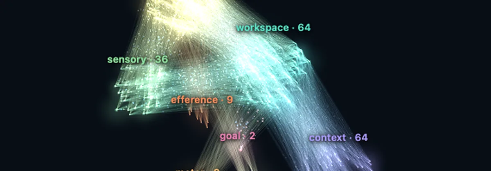
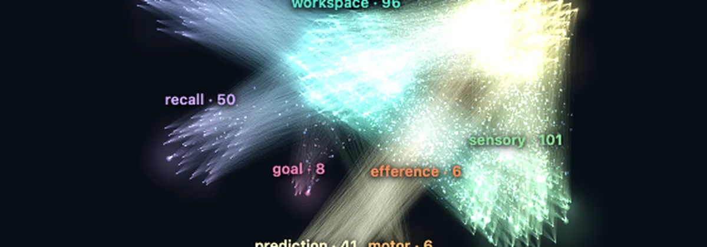
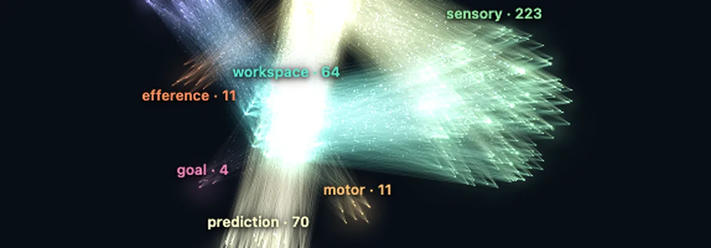
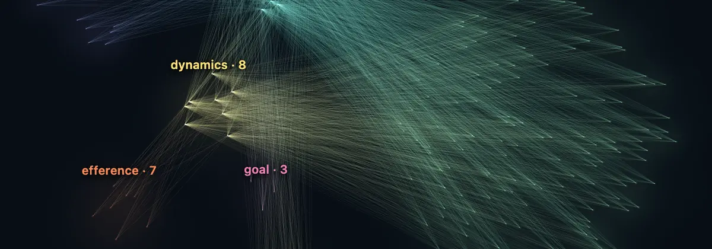

Each one learns by experience: observe, remember, predict, act, learn from what followed. No backward pass, no training switch, no frozen weights. The whole brain is drawn beside the task while it thinks, and every number has a receipt and a verifier.

01 · Arm
A body learned from babbling
Draw a figure and the arm copies it. It learned its own body from random movement and plans every torque through what it remembers.
- Nobody programmed its kinematics
- Adapts to a longer link with no reset, then returns
- Keeps learning while it copies
Held-out reaching 99% · online transformer on the same stream 40% · online MLP 2% · Receipt
OpenCodeReceipt

02 · World
A world that must be remembered
Ask for an object and it goes there from memory. Seen one cell at a time, the world has to be remembered to be navigated.
- Remembers where it saw each object, corrects the memory when the object moves
- Holds a cue across a delay and grounds words in objects
- Keeps navigating when doors stop opening
Requests fulfilled 100% with memory, 18% erased · cue at delay 8 100% vs 52% transformer · Receipt
OpenCodeReceipt

03 · Artist
A figure shown, a figure drawn
Draw a figure and the artist draws it stroke by stroke. It learned what its pen leaves by scribbling and replans from its own canvas after every stroke.
- Draws figures it has never seen
- Keeps drawing when its body and its canvas change mid-drawing
- 75 ms per decision at the p95, inside the 100 ms it has
Held-out F1 0.93 · frozen from birth 0.00 · online MLP with replay ring 0.80
OpenCodeReceipt

04 · Connect Four
The rules, learned by watching
Play against a brain that learned how a stone falls and what four in a row is from the games it played. No rules, no engine, no labelled moves.
- Beats an AlphaZero trained with the published recipe
- Searches the boards it imagines ten plies deep, sixteen late, and remembers what it proved
- Keeps learning from the game you play against it
moving first vs the perfect solver 30-0-0, vs the solver at 90% 30-0-0; moving second vs the solver at 70% 29-1-0, 30 games a side
PlayCodeReceipt